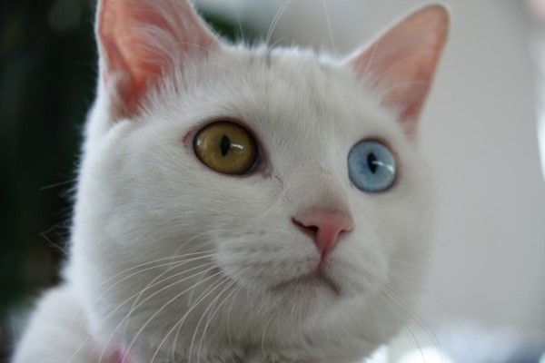
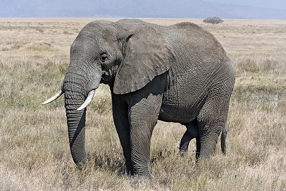
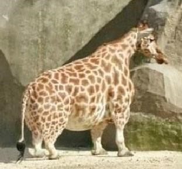
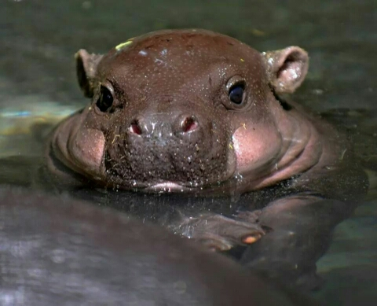
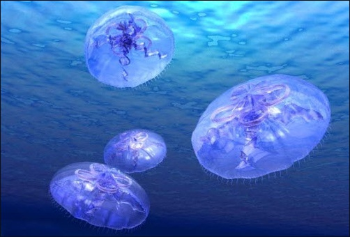
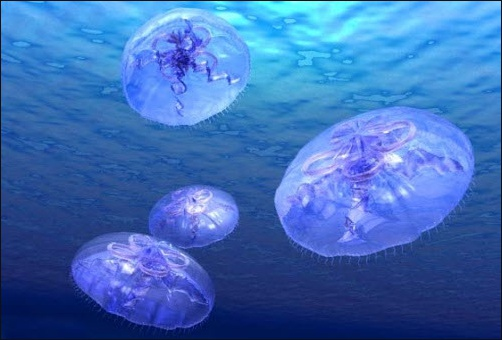
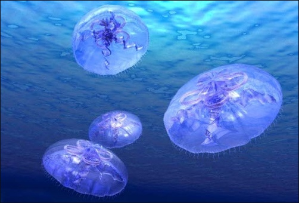

사람 곰
고양이 강아지


코끼리 개구리


기린 하마
 
이구아나 해파리
 

캥거루 사자

생물계의 두 갈래 가운데 하나.
현재 100만~120만 종이 알려져 있고 그 가운데 약 80%는 곤충이 차지한다.
원생동물부터 척추동물까지 23개 문(門)으로 분류된다.
주로 유기물을 영양분으로 섭취하며, 운동, 감각, 신경 따위의 기능이 발달하였다.
소화, 배설, 호흡, 순환, 생식 따위의 기관이 분화되어 있다.
